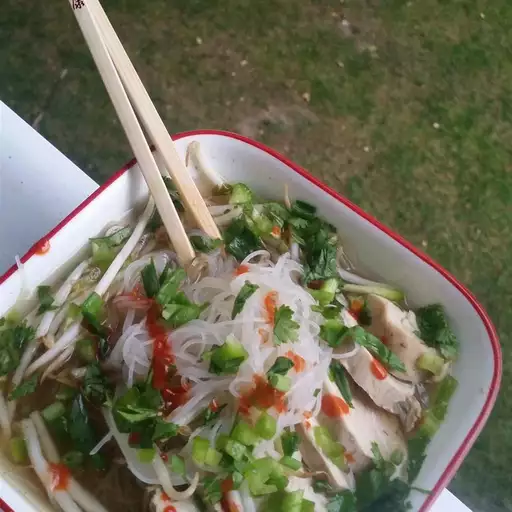

Pho Ga Soup

Description
Ingredients
- 1 tablespoon vegetable oil
- 1 small yellow onion, chopped
- 1 (8 ounce) package baby bella mushrooms, chopped
- 4 cloves garlic, minced
- 8 cups water
- 1 (6.75 ounce) package rice stick noodles (such as Maifun®)
- 8 teaspoons chicken bouillon
- 2 cooked chicken breasts, shredded
- 4 green onions, chopped
- ⅓ cup chopped fresh cilantro
- 2 cups bean sprouts
- 1 lime, sliced into wedges
- 1 dash Sriracha hot sauce, or more to taste
Steps
- Heat vegetable oil in a large saucepan over medium-high heat; saute onion, mushrooms, and garlic until tender, 5 to 10 minutes. Add water, rice noodles, and chicken bouillon to onion mixture; bring to a boil. Reduce heat to low.
- Mix shredded chicken, green onions, and cilantro into soup; simmer for 5 minutes more. Transfer soup to serving bowls and top with bean sprouts, a squeeze of lime juice, and Sriracha hot sauce.